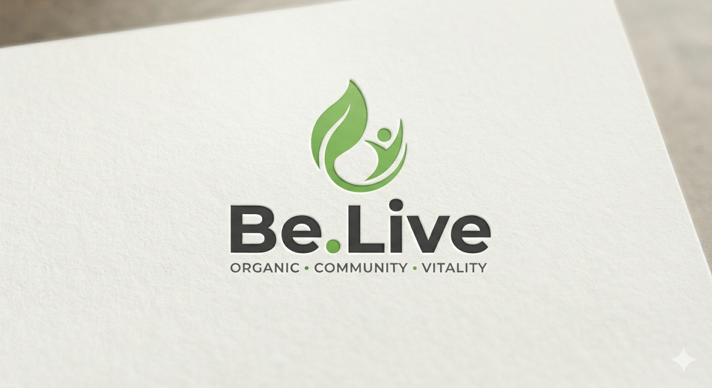

Our Philosophy
We are all running so fast behind money, jobs, and security that we have forgotten the most basic thing that keeps us alive — our connection to the soil, the seed, and the food we eat every day.
At some point, something inside us pauses. Not because life slows down, but because we finally choose to take a breath. That pause is where Be.Live was born.
We believe you deserve to know exactly what is on your plate — not just where it came from, how it was grown, who cultivated it, and the honesty of the ground it came from. Purity is not a premium luxury but a human birthright. Like everything else that truly matters, clean food cannot be made overnight. It takes time to grow safely, and we refuse to take shortcuts.
“This is not a disruption.
This is a return.”
Be.Live is a living experiment in choosing differently: soil over shortcuts, community over convenience, vitality over its illusion. We align directly with small farmers — the quiet custodians of our earth — to bring an honest harvest to your table.
Every ancient tradition reminds us that the body is the first temple. What we eat is more than nutrition — it is the foundation of clarity, calm, and a life lived well.
Nothing artificial, nothing hidden. What grows naturally, feeds naturally. The soil is the source — we protect it.
Farmers and families, connected by trust. Not a supply chain — a relationship. When the farmer thrives, we all do.
Not the absence of illness, but the presence of a life fully, joyfully lived. Clean food. Clear mind. Engaged living.
From the House of Sahoo
Two ventures. One family. The House of Sahoo envisions a world where health is predicted before it fails, and life is lived with organic intention. Sensera and Be.Live are its expressions — science and soul, growing together.